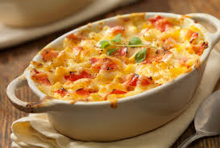

Lobster Mac and Cheese

Ingredient List
- Lobster Tails: 5-6 tails cooked and choppped
- Cheddar Cheese: Freshly shredded and divided
- Gruyere Cheese: Freshly Shredded
- Parmesan Cheese: Grated
- Butter: 1 whole stick
- Flour: all purpose
- Whole Milk
- Salt
- Garlic Powder
- Mustard Powder and Nutmeg
- Pepper
- Elbow Macaroni
- Parsley
Steps
- Cook: Cook the lobster according to your prefernce. I prefer to broil
- Prep: Heat oven to 400 degrees with the rack in the middle of the oven
- Sauce: In a large saucepan over medium heat melt the butter. Add the flour to the melted butter and stir until thickened, about 3 minutes
- Whisk: Slowly whisk in milk a little at a time. The slower you add the milk the thicker the sauce will be
- Stir: Add in 3 cups of the cheddar cheese, gruyere cheese, and ½ cup of parmesan cheese into the sauce. Reserve 1 ½ cups cheddar and ½ cup parmesan for the top
- Spices: Add in the salt, pepper, garlic powder, mustard powder and nutmeg to the sauce, stir until combined
- Mix: Stir together the cooked macaroni noodles, lobster and the sauce and transfer to a 9 by 13 baking, that has been prepped with cooking spray if needed
- Top: Sprinkle with remaining cheese and bake in the oven until golden and bubbling. 20-25 minutes
- Garnish: Top with flat leaf parsley if desired